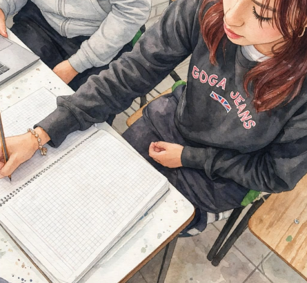
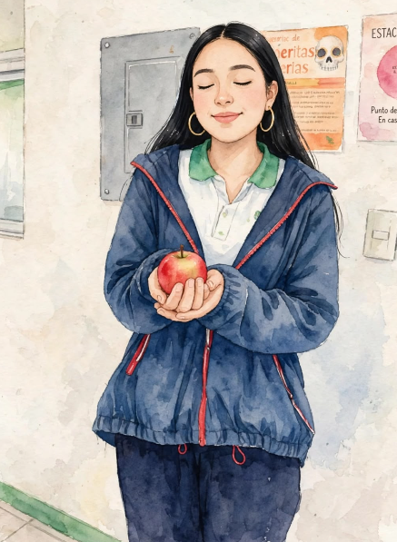

Mejorar el descanso
Establecer horarios regulares para dormir y evitar actividades que interrumpan el descanso.
Transformar mis hábitos y desarrollar herramientas para mi bienestar.
Proponer alternativas para mejorar mi bienestar físico y emocional.
Establecer horarios regulares para dormir y evitar actividades que interrumpan el descanso.
Procurar una alimentación variada, equilibrada y suficiente.
Incorporar actividades físicas agradables y adecuadas a mis posibilidades.
Mantener hábitos de limpieza y cuidado personal.
Identificar mis emociones y las situaciones que las provocan.
Hablar sobre mis sentimientos con respeto y claridad.
Distribuir mis responsabilidades y reservar momentos de descanso.
Acudir a personas de confianza cuando necesite orientación.
Cambiar un hábito requiere tiempo y constancia. Lo importante es comenzar con acciones pequeñas, realistas y adecuadas a mis necesidades.
Recursos prácticos para cuidar mi cuerpo y mis emociones.

Organizar mis actividades para respetar mis horas de sueño.
Anotar mis hábitos de alimentación, hidratación y cuidado personal.
Elegir movimientos o actividades que disfrute y favorezcan mi salud.
Escribir cómo me siento y reconocer qué situaciones influyen en mis emociones.
Tomar una pausa y respirar tranquilamente cuando necesite recuperar la calma.
Identificar personas adultas de confianza con quienes pueda hablar.
Pedir ayuda es una decisión responsable. Puedo acudir a familiares, docentes, orientación escolar o profesionales de la salud cuando una situación afecte mi bienestar.
Crear un plan personal con acciones para cuidar mi bienestar.

Establecer una rutina de descanso adecuada.
Mantener hábitos de alimentación, hidratación e higiene.
Realizar actividades físicas que disfrute.
Reconocer y expresar mis emociones de manera saludable.
Organizar mis responsabilidades para evitar acumular estrés.
Buscar apoyo cuando lo necesite.
Escribe una acción que te comprometes a realizar para cuidar tu bienestar físico o emocional.